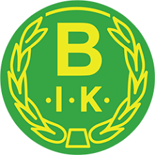

Bälaryds IK

Placement last year:
1st place, division 6 (moved up)
Name and role in the team:
Peter Wall, teamleader
What are your goals for the season?
The goal is to have atleast 3 teams behind us when all games are played,
as we are newcomers, we primarily want to establish ourselves before we look up the table.
Any changes in the squad for this season?
The squad is the same as last year and we have 5 new signings and 4 who are making a
comeback. There are also some who have not yet decided, there may be a few more new signings before the series starts.
But we have a significantly wider squad this year compared to last season.
we have a young squad where most were born around 2002. We have 2 who are leaving us for Aneby
SK.
Who in the team will play a big role this season and why?
I believe in our collective more than individual players as we have competition in all
positions on the pitch, so the most important thing is to keep the feeling we had last season carries
over into this season.
Which team are you looking forward to play against this season and why?
Looking forward to play against all teams. But we had a lot of duels with Torpa AIS in the
recent years, so it has started to be a bit of a derby feeling. There is also a bit of love-hate towards
Solberga.
Which team do you think will win this year?
Höreda comes from division 4, Solberga and Sommen qualified last year and Bäckseda, Örserum
was in the top and
both Eksjö and Ekenässjön have received reinforcements, so there are many teams challenging for the
series victory.
But maybe it's Solberga's turn as they qualified 2 years in a row.
Latest games:
Gripenbergs BK vs.  1 - 2
1 - 2
 vs. Sommens AIF 3 - 1
vs. Sommens AIF 3 - 1
Gripenbergs BK vs.  0 - 0
0 - 0